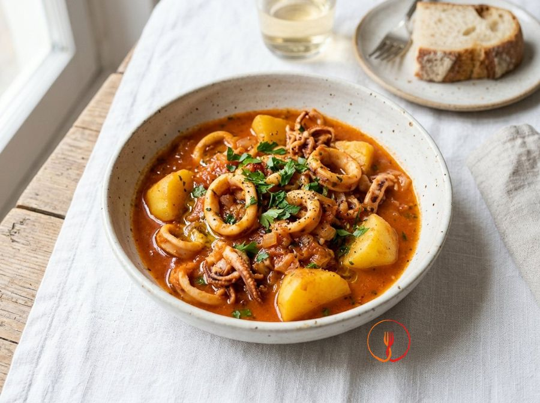

Stewed squid with potatoes
A timeless classic of homemade seafood cooking, where the sweetness of potatoes pairs with the bold taste of squid in a thick and tasty sauce. It is an economical and nutritious dish using humble ingredients capable of creating perfect harmony when slow-cooked.
A rustic and comforting maritime dish, ideal for a convivial dinner. The squid become tender thanks to slow cooking in tomato sauce, while the potatoes soak up all the flavor, creating an irresistible combination.
Ingredients
- Squid (fresh or defrosted)800 g
- Yellow-fleshed potatoes600 g
- Tomato passata (thick sieved tomatoes)400 g
- Extra virgin olive oil30 ml
- Dry white wine50 ml
- Garlic2 cloves
- Fresh parsley1 bunch
- Vegetable stock (or hot water)200 ml
- Fresh chilli (optional)1 piece
- Fine saltq.b.
Allergens
Molluscs, Sulphites
Method
- Begin by rinsing 800 g of squid under cold running water, then separate the tentacles from the body and cut the latter into rings about 2 cm wide. Remove the transparent internal cartilage and the outer skin if you prefer a more tender texture, using a sharp knife on a clean cutting board. Ensure the rings are of uniform size to guarantee even cooking of all the fish. You will get clean pieces that smell of the sea. The chef's tip is not to throw away the side fins, but to cut them into thin strips to add texture to the sauce.
- Take 600 g of yellow-fleshed potatoes, peel them carefully with a vegetable peeler and cut them into cubes of about 2-3 cm per side. Submerge the cubes in a bowl of cold water for a few minutes to remove excess starch, then drain and dry them well with a clean tea towel. This operation prevents the potatoes from breaking up too much during the long stewing process. The potatoes should appear clear and uniform. The chef suggests not cutting the potatoes too small, otherwise they will disappear into the sauce, becoming a puree.
- In a large high-sided saucepan, pour 30 ml of extra virgin olive oil and add 2 crushed garlic cloves and a piece of fresh chilli if desired. Heat over medium heat for about 2 minutes until the garlic becomes lightly golden and releases its characteristic aroma, being careful not to burn it. Use a wooden spoon to move the aromatics in the hot oil. You should smell an inviting aroma of garlic and oil without any trace of smoke. For a more delicate flavour, remove the inner germ of the garlic before putting it in the pan.
- Increase the heat to high and add the 800 g of prepared squid to the saucepan with the flavoured oil. Let the fish brown for about 3-4 minutes, stirring often to prevent it from sticking to the bottom of the pan. You will notice that the squid will release some of its water and change colour, becoming opaque and slightly pinkish. This phase is crucial to seal in the flavour and give the fish a less rubbery texture. Do not overlap the pieces too much to allow them all to touch the hot bottom.
- Deglaze the fish by pouring 50 ml of dry white wine directly into the still very hot saucepan. Keep the heat high and let the alcohol evaporate completely for about 2 minutes, breathing in the steam which must lose the pungent note typical of raw wine. Use the wooden spoon to lightly scrape the bottom of the pot, recovering the caramelised sugars of the fish through deglazing. The liquid will reduce significantly, leaving only the fruity aroma of the wine. Ensure the smell of alcohol has disappeared before moving to the next stage.
- Lower the heat to medium-low and pour 400 g of tomato passata into the saucepan. Stir well with the wooden spoon to incorporate the fish into the sauce and add a pinch of salt and a grind of black pepper. Partially cover with a lid and let cook for the first 10 minutes, allowing the tomato to pick up the flavours of the fish juices. The sauce will begin to simmer gently, taking on an intense and vibrant red colour. The chef recommends rinsing the passata bottle with a tiny amount of water to waste nothing and adding it to the sauce.
- Add the 600 g of cubed potatoes to the squid sauce and add about 200 ml of hot vegetable stock to almost cover the ingredients. Stir gently to distribute the potatoes evenly in the saucepan and bring back to a light boil. Cover completely with the lid and continue cooking over low heat for about 25-30 minutes without stirring too often so as not to break the potatoes. The potatoes should become tender but remain whole, absorbing the flavour of the fish. If the sauce dries out too much, add another ladle of hot liquid to maintain moisture.
- Once the cooking time has elapsed, check the consistency of the squid by piercing it with a fork: it should be tender and not rubbery. Turn off the heat and add a generous handful of freshly chopped parsley to give a note of freshness and colour to the dish. Let everything rest for 5 minutes with the pot covered before serving, so that the flavours settle and the sauce becomes velvety. You will get a moist, fragrant and creamy dish thanks to the starch released by the potatoes. The final touch is a drizzle of raw oil directly on the plate to enhance all the aromas.
Tips
- Cut the potatoes into uniform cubes to ensure even cooking alongside the squid.
- Do not over-salt at the beginning, as the sauce will reduce and naturally intensify the fish's saltiness.
- Store leftovers in the refrigerator for up to one day: they will be even tastier when reheated.
Variations
- Add some black olives halfway through cooking to enrich the dish with a bold, savory note.
- You can replace the tomato purée with fresh cherry tomatoes for a lighter and more colorful version.
Nutrition facts (estimate)
| Per serving (480 g) | Per 100 g | |
|---|---|---|
| Energy | 1540 kJ / 368 kcal | 321 kJ / 77 kcal |
| Protein | 34.5 g | 7.2 g |
| Carbohydrates | 30.2 g | 6.3 g |
| of which sugars | 6.8 g | 1.4 g |
| Fat | 9.4 g | 2.0 g |
| of which saturates | 1.5 g | 0.3 g |
| Fibre | 4.5 g | 0.9 g |
| Salt | 1.4 g | 0.3 g |
AI estimates based on average CREA / USDA data: indicative only, not a substitute for medical or dietitian advice.
Open the recipe in the app for the shopping list, ingredient sheets and nearby shops.